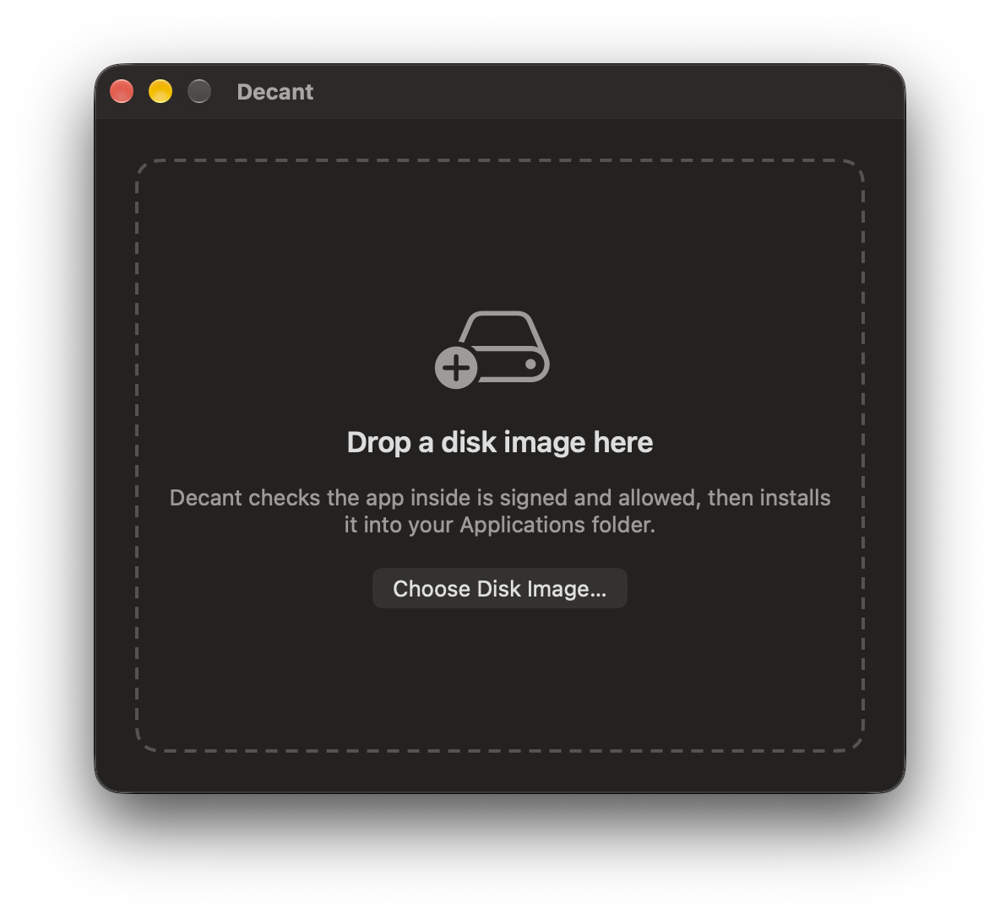
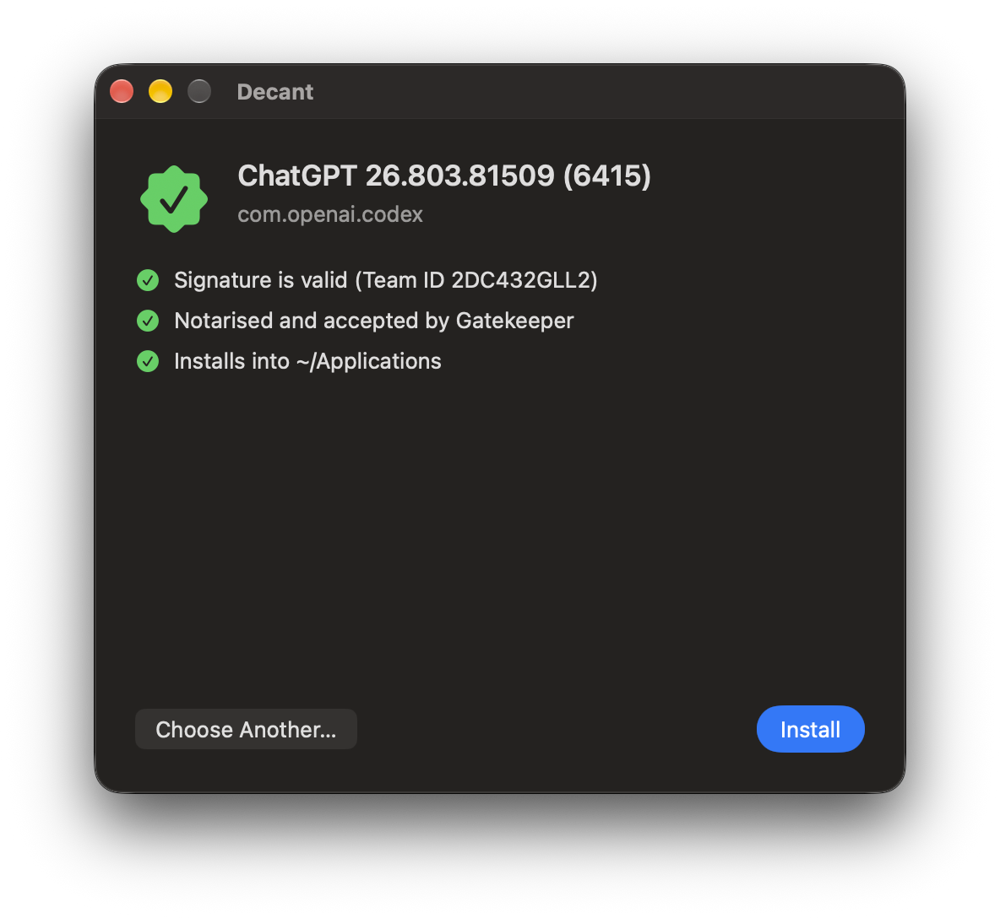

Verifies before it installs
Strict code signature, Developer ID and notarization through Gatekeeper, and an optional pinned Team ID and bundle ID. Ad-hoc and unsigned apps are refused.
Open the DMG, drag the app to Applications, done. It's a great way to install
an app on one Mac with an admin account. On a fleet of locked-down Macs it's a queue of
tickets, or an afternoon repackaging someone else's app as a .pkg.
Decant does the dragging. Hand it the vendor's disk image from your MDM and
it checks the app, then installs it into the signed-in user's
~/Applications, owned by that user. Nobody needs admin rights. Users who'd
rather do it themselves get Decant.app, with exactly the same checks, if you let them.
Because "it was on the vendor's website" isn't a security policy.
Strict code signature, Developer ID and notarization through Gatekeeper, and an optional pinned Team ID and bundle ID. Ad-hoc and unsigned apps are refused.
If Gatekeeper is switched off, or a local rule waved the app through, nothing proves notarization, so Decant refuses. A Team ID only counts if Apple issued the certificate.
All checks run on a root-owned staged copy, which is then swapped in atomically. Symlink tricks and races in the user's folder can't redirect root's writes.
Exactly one app and nothing else that runs. A .pkg in disguise, an
"Install Foo.app", a helpful script: all refused, with nothing changed.
Downgrades are refused. Editing the version number in Info.plist won't keep
an old, vulnerable copy around, however creative the user is.
Settings come from a managed profile that users can't change. Root-owned, non-writable files only.
No repackaging, no wrapper scripts to babysit, no "can you just make me an admin?"
.pkg installs
/usr/local/bin/decant, Decant.app and the update daemon. Don't want the app?
decant-cli.pkg leaves it out, and updates keep it that way..mobileconfig sets secure
defaults. Adjust what you need.decant install Example.dmg --expect-team-id ABCDE12345
RESULT updated exit=0: Updated Example.app from 1.2 to 1.3 at /Users/alex/Applications/Example.app--all-users installs a separate,
separately verified copy for each account.sudo decant uninstall removes the
tool, the app, the daemon, the logs and every user's settings.For people who'd rather not raise a ticket to install a PDF reader.


It runs as the user and reads the same managed profile, so nobody can turn a check off. Menu bar, open at login and update settings can be locked from the profile too.
Rather keep installs to yourself? Set AllowUserInstalls to
false and only your MDM can install. Decant.app tells users it has been disabled
by their administrator and quits. It also leaves the menu bar and stops opening at login.
Your scripts run as root, so they still install for whoever is signed in.
It installs drag-and-drop apps. It isn't magic. Apps installed into ~/Applications are writable by the user. Apps with system
extensions, privileged helpers or a fixed /Applications path should still be
deployed as packages. The README covers the trade-offs in full.